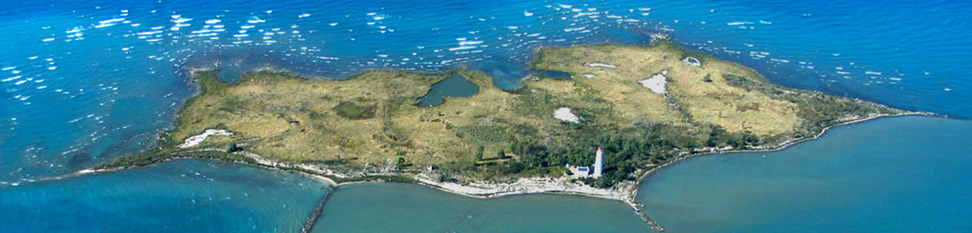
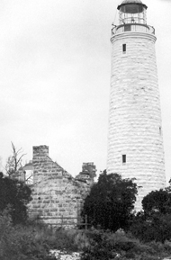
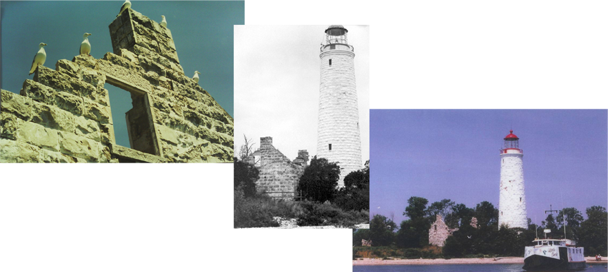

ABOUT CHANTRY ISLAND
News and Events
2017-01-10
Doug Johnson's 91st Birthday
Wishing a happy birthday to one of our strongest supporters.
2017-01-08
Chantry Island Tour Base Reopening in June
2016-12-02
Southampton Christmas Parade
The Marine Heritage Society and Propeller Club Float or I mean boat was well received Friday Night at the annual Christmas Parade. Towing the Boat was a Saugeen Shores Fire pick up truck driven by Phil Eagleson our Fire Chief.
Chantry Island
Chantry Island is a glacial moraine and consists of stone above the water and beneath extending a mile north and a mile south of the island. These underwater shoals of massive granite boulders have made this area one of the most treacherous in the Great Lakes.
There are over 50 known shipwrecks around the island and there are many accounts from the 1800’s and early – mid 1900’s of these disasters and lost lives. Today, buoys and modern navigational tools safely guide boats through the area.
The island varies in size depending on the level of Lake Huron. Today, with a low lake level Chantry Island is about 68 acres. In 1986 when the water level was at the highest of the century, the island was only about 10 acres, causing trees on the west, north and south sides to drown.
During the mid 1800’s water traffic on the Great Lakes had substantially increased and the colonial government called for improved navigational tools for the mariners on the Lake Huron. John Brown of Thorold was contracted to build the lighthouse on Chantry Island, as well as 10 other lighthouses to help sailors navigate the Lake. Because of the expense and difficulty of building, only six were completed. The Chantry Island Lighthouse was one of these completed and it was lit on April 1, 1859.
The lighthouse stands 86 ft. above water level and is 80 ft. high from its base to the light’s center. The lantern room of the lighthouse was fitted with a Fresnel lens built and transported from Paris, France. The first fuel used was sperm whale oil and the first light was a fixed light, not the familiar flashing one. Other fuels used have been colza oil, coal oil, kerosene, acetylene and electricity. Its present-day flashing light is solar powered.
Federal Bird Sanctuary
In 1957 the Canadian Wildlife Service declared Chantry Island a Federal Migratory Bird Sanctuary to protect the migratory and nesting birds of the island. It is the largest Federal Migratory Bird Sanctuary between James Bay and Point Pelee.
There are approximately fifty thousand birds (including chicks) on the island during the breeding season. It is home to nesting colonies of Great Blue Heron, Great Egret, Black-crowned Night- Heron, Herring Gull, Ring-billed Gull and Double-crested Cormorant.
Water fowl such as Mallard, American Black Duck, Gadwall, Blue-winged Teal, Green-winged Teal, Northern Pintail, and American Wigeon are also known nesters on the island.
Because the island is a migratory bird sanctuary, the number of people on the island on any given day is strictly limited and tours must be booked through the Chantry Island Tour Base.
Restoration
For almost 100 years (1859 – 1954), light keepers lived on the island to keep the light burning for mariners on the lake. When the lighthouse lamp was converted to electricity in 1954, a light keeper was no longer needed. The buildings were left neglected and suffered at the hands of vandals. The lighthouse still stood intact, but little was left of the light keeper’s quarters. The roof had fallen in and the walls and floors had crumbled into a pile of rubble in the basement.
Light Keeper's Cottage Before Restoration
 In 1997 the local Marine Heritage Society established specific goals for the island's restoration. The project was to be funded by donations and fundraising efforts, and the majority of the work was to be done by volunteers.
Light Keeper's Cottage After Restoration
The Light Keeper's Cottage restoration was completed in 2001. Over 250 volunteers put in more than 300,000 hours of labor to finish the restoration and ready the boat for tours. Since 2001 volunteers have restored the staircase of the lighthouse, built a boathouse on the island, constructed a replica of the original boat (which sits in the boathouse) and reconstructed the privy.
Today the tour is operated with over 125 volunteers, whose jobs include island housekeepers, gardeners, tour boat captains, crew and tour guides, and gift shop sales and service personnel. Volunteers also install the portable walkways and docks every spring and remove them every fall. To date, there have been over 20,538 visitors to the island.
Partners in the restoration, island maintenance, Chantry Island Tour operation and other Marine Heritage endeavors include the Town of Saugeen Shores, Bruce County Museum and Cultural Centre, Southampton Propeller Club, Chantry Island Chambettes and Saugeen Shores Chamber of Commerce. Their continuous support contributes to the success of the Marine Heritage Society goal to preserve the local marine history.
MHS Volunteers
The Marine Heritage Society is a not-for-profit group of volunteers dedicated to the preservation and enhancement of our community's marine history. Since so many people volunteer their time and energy to help our organization function, this section is dedicated to our wonderful volunteers. Thank you all very much, this would not be possible without your time and donations.

Don Nicholson
Chairman
Pat O'Connor
Vice Chairman
John Rigby
Treasurer
Stan Young
Secretary
Rick Smith
Past Chairman
Peter Williamson
Observer
Jane Kramer
Vicki Tomori
Dan Holmes
Dave Wenn

Ed Braun
John Willetts
Ali Kelly
Volunteer Interviews
Contact Us
Marine Heritage Society
86 Saugeen Street
Southampton,
Ontario Canada, N0H 2L0